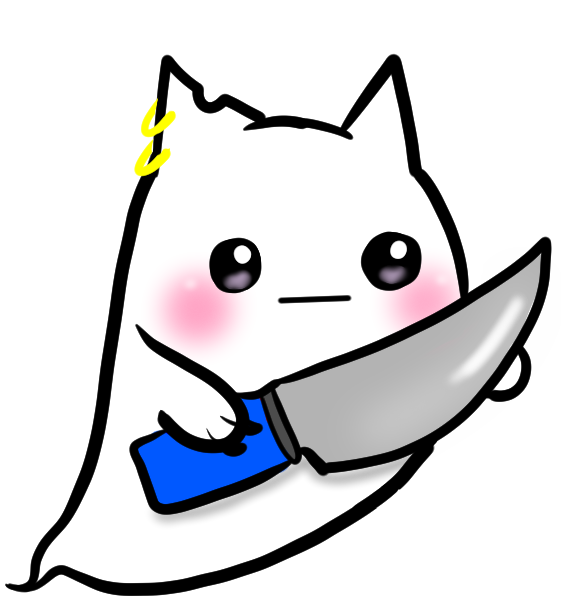
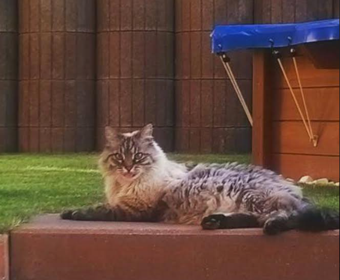

Meow à tous, mon nom est Baji et je suis le chat de compagnie de Mininaa, je suis également la mascotte de la chaîne.
En effet vous allez me retrouvez un peu partout. Dans les fonds de présentation : Mais également dans les emotes de la chaînes :  Vous pouvez aussi me retrouver sur vos badges d'abonnée :


Je vous ai perdu n'est-ce pas ?
Je suis l'incarnation de tout les chats que Marina as eu dans sa vie, à actuellement et aura dans le futur.
Je suis un peu un chat immortel, la classe n'est-ce pas ?
Voilà c'était ma petite présentation.